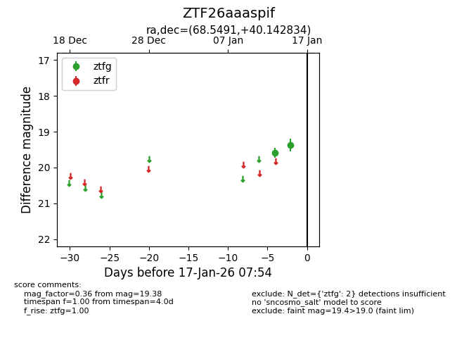
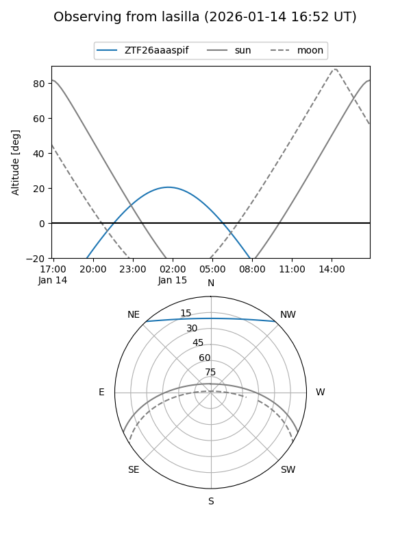
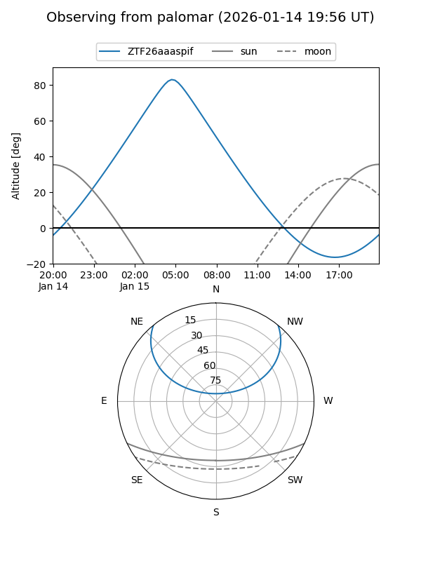

ZTF26aaaspif
Target ZTF26aaaspif at 2026-01-15 07:55
Aliases and brokers:
FINK: link
Lasair: link
ALeRCE: link
alt names
ZTF26aaaspif (ztf,fink_ztf)
Coordinates:
equatorial (ra, dec) = 68.5491,+40.14283
equatorial (HMS+DMS) = 04:34:11.79,+40:08:34.20
galactic (l, b) = (162.2756,-5.13607)
Flags:
Photometry:
last ztfg=19.38
2 ztfg detections
Lightcurve

Visibility


Additional plots